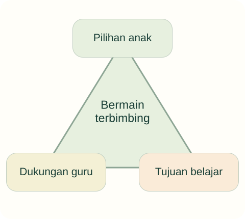
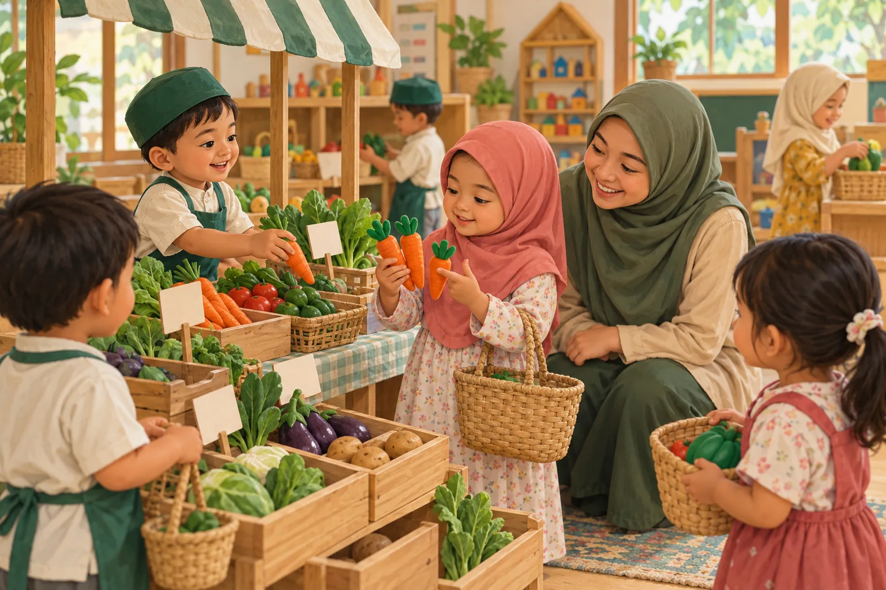

Tujuan pembelajaran
- Membedakan bermain bebas, bermain terbimbing, dan pengajaran langsung
- Merancang pilihan anak serta bantuan bertahap
- Menafsirkan bukti penelitian bermain secara terbatas
Tiga cara mengatur pengalaman
Dalam bermain bebas, anak terutama menentukan arah dan tindakan. Dalam bermain terbimbing, pendidik menyiapkan tujuan belajar dan lingkungan serta memberi dukungan, sementara anak tetap memiliki pilihan bermakna. Dalam pengajaran langsung, pendidik mengambil peran utama mencontohkan atau menjelaskan cara tertentu. Ketiganya dapat muncul dalam satu hari belajar. Pada permainan pasar, anak dapat memilih peran dan barang. Guru menjaga tujuan bilangan dengan menata benda yang dapat dihitung dan memberi petunjuk ketika dibutuhkan.
Menentukan kapan guru masuk
Guru dapat mengamati terlebih dahulu peran, strategi, dan persoalan yang sedang dihadapi anak. Jika jumlah wortel belum cocok, pertanyaan “bagaimana kita memeriksa pesanan ini?” membuka ruang untuk menentukan cara memeriksa. Bila anak kesulitan, guru dapat mencontohkan menyentuh satu benda setiap menyebut satu bilangan. Setelah itu, anak mencoba pada pesanan berikutnya. Gagasan bantuan sementara dapat dibaca melalui Wood et al. (1976).
Apa yang didukung penelitian
Tinjauan sistematis dan meta-analisis Skene et al. (2022) menemukan keunggulan bermain terbimbing pada sebagian hasil dan pembanding tertentu, termasuk matematika awal dan pengenalan bentuk dibanding pengajaran langsung, serta kosakata spasial dibanding bermain bebas. Banyak hasil lain tidak menunjukkan perbedaan yang jelas, dan bentuk bimbingan bervariasi antarstudi. Temuan ini memberi dasar untuk memilih pendekatan sesuai tujuan, lalu memeriksa bagaimana rancangan tertentu dijalankan dan direspons di kelas.
Merancang lingkungan dan bukti
Gunakan benda yang dapat dipindahkan dan cukup mudah diakses. Bukti dipilih sesuai tujuan. Bila tujuannya mencocokkan jumlah, amati apakah anak menyentuh satu wortel setiap menyebut angka dan berhenti pada jumlah yang diminta. Bila tujuannya bergiliran, amati bagaimana anak menyatakan usul dan menerima peran. Kesinambungan pengalaman dapat dilihat saat anak memakai strategi pada pesanan berbeda atau pada permainan lain.
Diagram konsep

Kapan pertanyaan guru membantu permainan berkembang?

Dalam bermain pasar, anak memilih menjadi penjual atau pembeli dan menyiapkan keranjang. Seorang pembeli meminta tiga wortel. Penjual memasukkan beberapa wortel dengan cepat. Guru mendengarkan sebelum menawarkan pertanyaan.
- Peran apa yang dipilih anak?
- Kapan guru dapat mulai membantu penghitungan?
Pembahasan kasus
Biarkan penjual memilih cara memeriksa keranjang. Beri contoh singkat jika strategi yang dipilih belum membantu. Pada pesanan berikutnya, lihat apa yang anak lakukan dengan bantuan yang dikurangi.
Buka contoh penalaran setelah mencoba
Usulkan petunjuk yang tetap memberi penjual kesempatan memilih cara memeriksa pesanan.
Guru bertanya bagaimana penjual akan memeriksa jumlah. Jika diperlukan, contohkan menghitung sambil menyentuh benda satu per satu.
Latihan terbimbing
Rancang satu giliran bermain pasar. Nyatakan satu tujuan, dua pilihan untuk anak, satu pertanyaan pembuka, dan satu petunjuk lanjutan jika diperlukan.
Latihan mandiri
Alihkan rancangan ke permainan bengkel atau dapur. Tuliskan pilihan yang dipertahankan pada anak dan bukti yang akan diamati saat dukungan dikurangi.
Lihat pembahasan
anak memilih peran dan guru memberi petunjuk sesuai tujuan saat anak membutuhkannya
Bermain terbimbing menggabungkan tujuan pendidik, pilihan anak, dan dukungan yang mengikuti situasi.
Refleksi calon pendidik
Kapan pertanyaan saya memperpanjang penyelidikan anak? Kapan pertanyaan itu justru memutus alur permainan?
Catatan hanya disimpan di peramban ini. Tidak dikirim kepada dosen.
Referensi dan bacaan pendamping
- Dewey, J. (1997). Experience and education. Touchstone. (Original work published 1938)Bacaan klasik tentang kualitas pengalaman pendidikan. Tahun kutipan dibedakan antara karya asli dan terbitan ulang.
- Skene, K., O’Farrelly, C. M., Byrne, E. M., Kirby, N., Stevens, E. C., & Ramchandani, P. G. (2022). Can guidance during play enhance children’s learning and development in educational contexts? A systematic review and meta-analysis. Child Development, 93(4), 1162–1180.Keunggulan bermain terbimbing ditemukan pada hasil tertentu; tidak untuk klaim unggul di semua domain.
- Wood, D., Bruner, J. S., & Ross, G. (1976). The role of tutoring in problem solving. Journal of Child Psychology and Psychiatry, 17(2), 89–100.Sumber primer konsep scaffolding; konteks tugas penelitian terbatas, bukan bukti semua bentuk bantuan selalu efektif.
- Yogman, M., Garner, A., Hutchinson, J., Hirsh-Pasek, K., Golinkoff, R. M., Committee on Psychosocial Aspects of Child and Family Health, & Council on Communications and Media. (2018). The power of play: A pediatric role in enhancing development in young children. Pediatrics, 142(3), Article e20182058.Laporan klinis berbasis literatur, bukan satu eksperimen. Digunakan sebagai bacaan pengayaan bermain dan relasi pengasuhan.